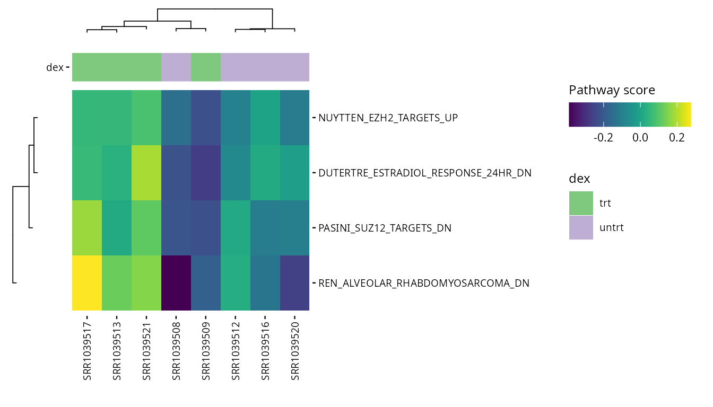
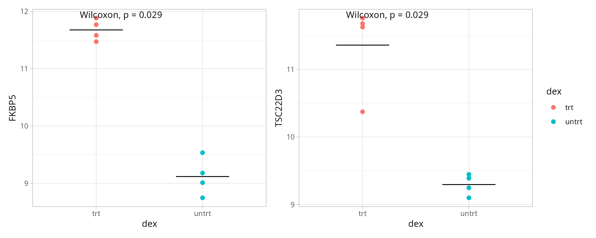
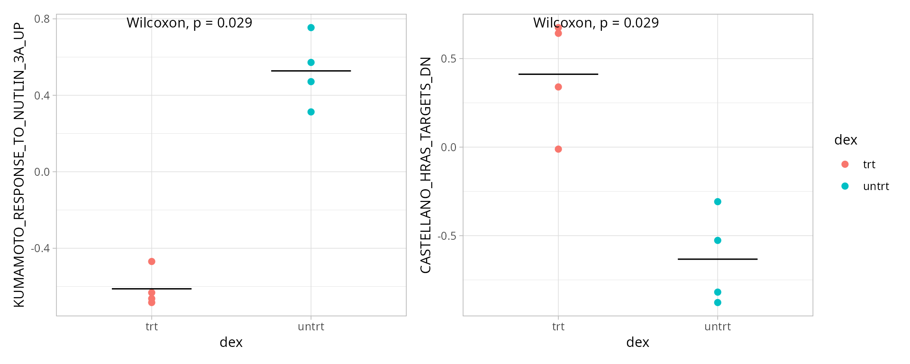
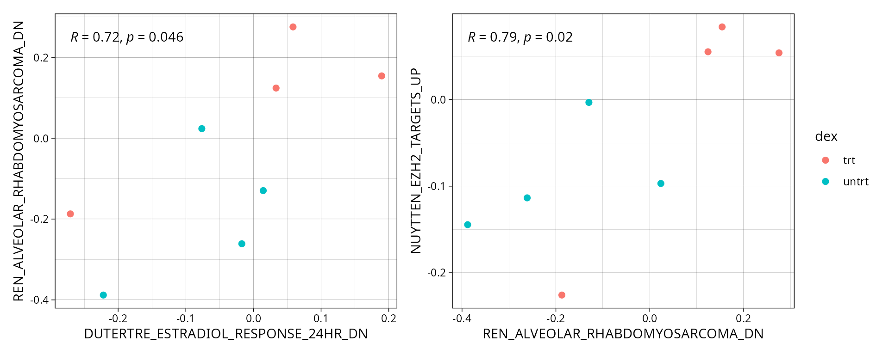

Unsupervised RNA-seq analysis
Cordeliers Artificial Intelligence and Bioinformatics
Source:vignettes/unsup_rnaseq.Rmd
unsup_rnaseq.RmdFor the 2 examples, we are using an open dataset which is given by
the airway package. It provides a gene expression dataset
derived from human bronchial epithelial cells, treated
or not with dexamethasone (a corticosteroid).
Here is an example of how the unsupervised part of
the CAIBIrnaseq package can be use.
First, we need to import the required packages :
library(airway)
library(SummarizedExperiment)Before analysing the dataset, we define the variables with the names of the genes / pathways … that we want to analyse.
These variables will change in function of how your dataset is build and which type of data it is.
If you find the definition of the variables heavy in your code, you
can create a .yml file, for example named
params.yml, call it in a cell, and it will automatically
import the variables. Your code will be clearer.
species <- "Homo sapiens"
# Annotation variable to visualize
plot_annotations <- "dex" # treated or untreated
# Quality parameters
qc_min_nsamp <- 2
qc_min_gene_counts <- 10
# Clustering of expression
exp_cluster <- data.frame(k = 2)
# Clustering of metadata
metadata_clusters <- list(
pathway_scores = data.frame(k = 2),
microenv_scores = data.frame(k = 3)
)
# Pathway collections
pathway_collections <- c("CP:REACTOME", "H") # You can add as many pathways as you want it will only create more plots
# Interesting genes
heatmap_genes <- list(
c("NR3C1", "FKBP5", "TSC22D3", "ZBTB16", "PER1"), # gènes régulés par le glucocorticoïde
c("CYP1B1", "G6PD", "HMOX1", "NQO1", "SOD2") # stress oxydatif / métabolisme
)
# Interesting pathways (adapt to the results)
heatmap_pathways <- c(
"REACTOME_INTERLEUKIN_36_PATHWAY",
"REACTOME_IRS_ACTIVATION"
)
# Genes for the boxplots
boxplot_genes <- c("FKBP5", "TSC22D3")
# Pathways for the boxplots
boxplot_pathways <- c(
"REACTOME_INTERLEUKIN_36_PATHWAY",
"REACTOME_IRS_ACTIVATION"
)
# Corrélations entre gènes
correlation_genes <- list(
c("FKBP5", "TSC22D3"),
c("FKBP5", "ZBTB16")
)
# Pathways correlation
correlation_pathways <- list(
c("REACTOME_INTERLEUKIN_36_PATHWAY", "REACTOME_IRS_ACTIVATION"),
c("REACTOME_INTERLEUKIN_36_PATHWAY", "REACTOME_UBIQUINOL_BIOSYNTHESIS")
)Do not forget to import the package ! ;-)
Load data
This section loads the RNA-seq dataset for analysis. It ensures the correct input file is used, as specified in the parameters. rebase_gexp
Ensure your dataset is in a Summarized Experiment
object, because all the used functions below works with
SummarizedExperiment input.
If you want to know more about this type of object, please click here: Bioconductor
data(airway, package="airway")
exp_data <- airwayNext cell is for the airway dataset. The goal is to
match the names of the variables used in the package with the names of
the dataset.
library(biomaRt)
rowData(exp_data)$gene_length_kb <-
(rowData(exp_data)$gene_seq_end - rowData(exp_data)$gene_seq_start) / 1000
mart <- useMart("ensembl", dataset = "hsapiens_gene_ensembl")
gene_ids <- rowData(exp_data)$gene_id
annot <- getBM(attributes = c("ensembl_gene_id", "description"),
filters = "ensembl_gene_id",
values = gene_ids,
mart = mart)
matched <- match(rowData(exp_data)$gene_id, annot$ensembl_gene_id)
rowData(exp_data)$gene_description <- annot$description[matched]Pre-processing
Most datasets use ensembl gene ID by default after alignment, so this step rebases the expression data to gene names. This ensures consistency in naming for downstream analyses.
exp_data <- rebase_gexp(exp_data, annotation = "gene_name")Filter
Here, we filter out genes expressed in too few samples or with very low counts. This removes noise from the data and focuses on meaningful gene expressions.
exp_data <- filter_gexp(exp_data,
min_nsamp = 1,
min_counts = 1)Visualization of the filtering process to ensure the criteria applied align with the dataset’s characteristics:
colData(exp_data)$sample_id <- colnames(exp_data)
plot_qc_filters(exp_data)## Warning: Removed 8 rows containing missing values or values outside the scale range
## (`geom_text_repel()`).## Warning in geom2trace.default(dots[[1L]][[1L]], dots[[2L]][[1L]], dots[[3L]][[1L]]): geom_GeomTextRepel() has yet to be implemented in plotly.
## If you'd like to see this geom implemented,
## Please open an issue with your example code at
## https://github.com/ropensci/plotly/issuesNormalize
Here, we apply a normalization to the expression data, making samples
comparable by reducing variability due to technical differences. For
datasets with few samples, rlog is the preferred
normalization and when more samples are present, vst is
applied.
exp_data <- normalize_gexp(exp_data)PCA
Principal component analysis (PCA) identifies the major patterns in the dataset. These patterns help explore similarities or differences among samples based on gene expression.
pca_res = pca_gexp(exp_data)
exp_data@metadata[["pca_res"]] <- pca_res
annotations <- setdiff(plot_annotations, c("exp_cluster", "path_cluster"))
plot_pca(exp_data, color = plot_annotations)If you want something more visual, you can add a circular/oval shape
to circle the different genotypes of samples, use the
fviz_pca_ind function from the factoextra
package. With this dataset, it is not relevant but it can be with your
persona dataset. Here, it highlights the fact that the 2 groups are not
crossing each other. The trt group has more PC1, whereas
the untrt group has less. We could conclude that PC1 is
more represented in the treated samples.
## Loading required package: ggplot2## Welcome! Want to learn more? See two factoextra-related books at https://goo.gl/ve3WBa
groups <- SummarizedExperiment::colData(exp_data)$dex # here we want to split in function of `treated` and `untreated`
fviz_pca_ind(pca_res,
geom = "point",
habillage = groups,
palette = c("#00AFBB", "#E7B800"), # Personalized colors
addEllipses = TRUE,
ellipse.type = "confidence",
repel = TRUE,
label = "none"
)Unsupervised clustering
Here, we group samples based on expression patterns without prior knowledge using hierarchical clustering on either a selected gene list from the parameters or, by default, the 2000 most highly expressed genes.
This can be useful for discovering sample subgroups or new biological insights.
exp_data <- cluster_exp(exp_data, k = exp_cluster$k, genes = exp_cluster$genes, n_pcs = 3)Visual representation of expression levels for HVG across clusters, highlighting distinct patterns.
hvg <- highly_variable_genes(exp_data)
exp_cluster <- data.frame(k = 2)
hm <- plot_exp_heatmap(exp_data, genes = hvg,
annotations = c(plot_annotations, "exp_cluster"),
show_rownames = FALSE,
hm_color_limits = c(-2,2),
fname = "results/clustering/heatmap_2000hvg_exp_cluster.pdf")
hm
Pathway activity
Pathway analysis enables us to understand the functional implications of gene expression changes. Here, we analyze the dataset for pathway activity using two methods.
PROGENy
PROGENy is a collection of only 14 core pathway responsive genes from large signaling perturbation experiments. For more information see the original paper.
The returned plot will give us information about the pathways that
are activated for each sample. There is especially one pathway that is
highly activated : EGFR , in the sample
SRR1039517
progeny_scores <- score_progeny(exp_data, species = "Homo sapiens")
tmp <- S4Vectors::metadata(exp_data)
tmp[["progeny_scores"]] <- progeny_scores
S4Vectors::metadata(exp_data) <- tmp
plot_progeny_heatmap(exp_data, annotations = plot_annotations,
fname = "results/pathways/hm_progeny_scores.pdf")## Warning in prep_scores_hm(exp_data, progeny_scores): 'sample_id' already exists
## in colData and will be overwritten.
write.csv(progeny_scores, file = "results/pathways/progeny_scores.csv")Pathways
Pathway collections available in the MSIGdb can be specified in the
parameters. These pathways are scored and ranked by their variance in
the data. These are the available collections (use
gs_subcollection as name except for Hallmarks, which should
be ‘H’).
library(msigdbr)
library(dplyr)
library(kableExtra)
msigdbr::msigdbr_collections() |>
kableExtra::kbl() |>
kableExtra::kable_styling() |>
kableExtra::scroll_box(height = "300px")| gs_collection | gs_subcollection | gs_collection_name | num_genesets |
|---|---|---|---|
| C1 | Positional | 302 | |
| C2 | CGP | Chemical and Genetic Perturbations | 3494 |
| C2 | CP | Canonical Pathways | 19 |
| C2 | CP:BIOCARTA | BioCarta Pathways | 292 |
| C2 | CP:KEGG_LEGACY | KEGG Legacy Pathways | 186 |
| C2 | CP:KEGG_MEDICUS | KEGG Medicus Pathways | 658 |
| C2 | CP:PID | PID Pathways | 196 |
| C2 | CP:REACTOME | Reactome Pathways | 1736 |
| C2 | CP:WIKIPATHWAYS | WikiPathways | 830 |
| C3 | MIR:MIRDB | miRDB | 2377 |
| C3 | MIR:MIR_LEGACY | MIR_Legacy | 221 |
| C3 | TFT:GTRD | GTRD | 505 |
| C3 | TFT:TFT_LEGACY | TFT_Legacy | 610 |
| C4 | 3CA | Curated Cancer Cell Atlas gene sets | 148 |
| C4 | CGN | Cancer Gene Neighborhoods | 427 |
| C4 | CM | Cancer Modules | 431 |
| C5 | GO:BP | GO Biological Process | 7608 |
| C5 | GO:CC | GO Cellular Component | 1026 |
| C5 | GO:MF | GO Molecular Function | 1820 |
| C5 | HPO | Human Phenotype Ontology | 5653 |
| C6 | Oncogenic Signature | 189 | |
| C7 | IMMUNESIGDB | ImmuneSigDB | 4872 |
| C7 | VAX | HIPC Vaccine Response | 347 |
| C8 | Cell Type Signature | 840 | |
| H | Hallmark | 50 |
pathways <- get_annotation_collection(pathway_collections,
species = species)## Warning in FUN(X[[i]], ...): Collection `H` not found in MSigDB. Skipping.
pathway_scores <- score_pathways(exp_data, pathways, verbose = FALSE)
S4Vectors::metadata(exp_data)[["pathway_scores"]] <- pathway_scores
collections <- pathway_collections |>
paste(collapse = "_") |>
stringr::str_remove("\\:")
plot_pathway_heatmap(exp_data, annotations = plot_annotations,
fwidth = 9,
fname = stringr::str_glue(
"results/pathways/hm_paths_{collections}_top20.pdf")
)## Warning in prep_scores_hm(exp_data, pathway_scores, pathways): 'sample_id'
## already exists in colData and will be overwritten.Microenvironment scores
This step calculates immune and stromal cell type abundances using MCPcounter or mMCPcounter. It helps to infer the composition of the tumor microenvironment or similar contexts.
mcp_scores <- mcp_counter(exp_data, species = species)
S4Vectors::metadata(exp_data)[["microenv_scores"]] <- mcp_scores
plot_microenv_heatmap(exp_data, annotations = c("dex", "exp_cluster"),
fname = "results/tme/heatSmap_mcpcounter.pdf")## Warning in prep_scores_hm(exp_data, microenv_scores): 'sample_id' already
## exists in colData and will be overwritten.
write.csv(mcp_scores, file = "results/tme/scores_mcpcounter.csv")Targeted plots
This section focuses on visualizing specific genes or pathways of interest, as specified in the parameters.
Heatmaps
Generates heatmaps for pre-selected genes of interest to observe their expression across samples or conditions.
hms <- lapply(1:length(heatmap_genes), function(i) {
gene_annot <- SummarizedExperiment::rowData(exp_data)
genes <- heatmap_genes[[i]]
name <- ifelse(is.null(names(heatmap_genes)), i, names(heatmap_genes)[i])
plot_exp_heatmap(exp_data, genes = genes,
annotations = plot_annotations,
fname = stringr::str_glue("results/targeted/hm_genes_{i}.pdf"))
})
patchwork::wrap_plots(hms, ncol = 2, guides = "collect")Selected pathways
valid_pathways <- intersect(heatmap_pathways, rownames(pathway_scores))
plot_pathway_heatmap(exp_data,
annotations = plot_annotations,
pathways = valid_pathways,
fname = stringr::str_glue("results/targeted/hm_pathways_selected.pdf"))## Warning in prep_scores_hm(exp_data, pathway_scores, pathways): 'sample_id'
## already exists in colData and will be overwritten.
Boxplots
Boxplots provide a clear comparison of expression levels across experimental groups or conditions. All jobs still running at 10:00 on Friday will be killed as part of the maintenance. #### Selected genes
genes <- boxplot_genes
annotations <- plot_annotations
boxplots <- lapply(genes, function(gene) {
lapply(annotations, function(annotation) {
plt <- plot_exp_boxplot(exp_data, gene = gene,
annotation = annotation,
color_var = annotation,
pt_size = 2,
fname = stringr::str_glue("results/targeted/boxplots/box_{gene}_{annotation}.pdf"))
})
}) |> purrr::flatten()
patchwork::wrap_plots(boxplots, nrows = round(length(boxplots)/2), guides = "collect")
Selected pathways
paths <- boxplot_pathways
annotations <- plot_annotations
boxplots <- lapply(paths, function(path) {
lapply(annotations, function(annotation) {
plt <- plot_path_boxplot(exp_data,
pathway = path,
annotation = annotation,
color_var = annotation,
pt_size = 2,
fname = stringr::str_glue("results/targeted/boxplots/box_{path}_{annotation}.pdf"))
})
}) |> purrr::flatten()
patchwork::wrap_plots(boxplots, nrows = round(length(boxplots)/2), guides = "collect")
Correlations
This section visualizes relationships between pairs of genes or pathways by plotting their expression/activity correlations. Correlation analysis can reveal important co-regulation or interaction patterns, helping to uncover biologically meaningful relationships.
Selected genes
Here we plot the correlation between selected gene pairs across the dataset. Each pair is plotted separately, and color-coded by sample annotation.
gene_pairs <- correlation_genes
annotations <- plot_annotations
cor_plts <- lapply(gene_pairs, function(gene_pair) {
lapply(annotations, function(annot) {
plot_exp_scatter(exp_data,
gene1 = gene_pair[1],
gene2 = gene_pair[2],
color_var = annot,
fname = stringr::str_glue(
"results/targeted/correlations/cor_{gene_pair[1]}_{gene_pair[2]}_color={annot}.pdf"))
})
}) |> purrr::flatten()
patchwork::wrap_plots(cor_plts, nrows = round(length(cor_plts)/2), guides = "collect")Selected pathways
Correlation plots for selected pathways can help identify similarities or differences in pathway activity patterns across samples. Each pathway pair is plotted separately and color-coded by sample annotation to illustrate trends within each condition.
path_pairs <-correlation_pathways
annotations <- plot_annotations
cor_plts <- lapply(path_pairs, function(path_pair) {
lapply(annotations, function(annot) {
plot_path_scatter(exp_data,
pathway1 = path_pair[1],
pathway2 = path_pair[2],## Call `lifecycle::last_lifecycle_warnings()` to see where this warning was
color_var = annot,
fname = stringr::str_glue(
"results/targeted/correlations/cor_{path_pair[1]}_{path_pair[2]}_color={annot}.pdf"))
})
}) |> purrr::flatten()
patchwork::wrap_plots(cor_plts, nrows = round(length(cor_plts)/2), guides = "collect")
Cluster using metadata
types = names(metadata_clusters)
for(type in types) {
exp_data <- cluster_metadata(exp_data,
metadata_name = type,
k = metadata_clusters[[type]]$k,
features = metadata_clusters[[type]]$features,
n_pcs = 3 )
}Save SummarizedExperiment
The final step saves the processed dataset and results. This ensures all outputs can be revisited or shared for further analysis.
Report parameters
For reproducibility, the parameters used in the analysis and the computational environment details are documented.
sessionInfo
The sessionInfo() prints out all packages loaded at the
time of analysis, as well as their versions.
## R version 4.5.0 (2025-04-11)
## Platform: x86_64-pc-linux-gnu
## Running under: Ubuntu 24.04.2 LTS
##
## Matrix products: default
## BLAS: /usr/lib/x86_64-linux-gnu/blas/libblas.so.3.12.0
## LAPACK: /usr/lib/x86_64-linux-gnu/lapack/liblapack.so.3.12.0 LAPACK version 3.12.0
##
## locale:
## [1] LC_CTYPE=en_US.UTF-8 LC_NUMERIC=C
## [3] LC_TIME=en_US.UTF-8 LC_COLLATE=en_US.UTF-8
## [5] LC_MONETARY=en_US.UTF-8 LC_MESSAGES=en_US.UTF-8
## [7] LC_PAPER=en_US.UTF-8 LC_NAME=C
## [9] LC_ADDRESS=C LC_TELEPHONE=C
## [11] LC_MEASUREMENT=en_US.UTF-8 LC_IDENTIFICATION=C
##
## time zone: Europe/Paris
## tzcode source: system (glibc)
##
## attached base packages:
## [1] stats4 stats graphics grDevices utils datasets methods
## [8] base
##
## other attached packages:
## [1] kableExtra_1.4.0 dplyr_1.1.4
## [3] msigdbr_10.0.2 factoextra_1.0.7
## [5] ggplot2_3.5.2 biomaRt_2.64.0
## [7] CAIBIrnaseq_1.0.0 R.utils_2.13.0
## [9] R.oo_1.27.1 R.methodsS3_1.8.2
## [11] airway_1.28.0 SummarizedExperiment_1.38.1
## [13] Biobase_2.68.0 GenomicRanges_1.60.0
## [15] GenomeInfoDb_1.44.0 IRanges_2.42.0
## [17] S4Vectors_0.46.0 BiocGenerics_0.54.0
## [19] generics_0.1.3 MatrixGenerics_1.20.0
## [21] matrixStats_1.5.0
##
## loaded via a namespace (and not attached):
## [1] ggplotify_0.1.2 filelock_1.0.3
## [3] tibble_3.2.1 graph_1.86.0
## [5] XML_3.99-0.18 lifecycle_1.0.4
## [7] httr2_1.1.2 rstatix_0.7.2
## [9] lattice_0.22-5 crosstalk_1.2.1
## [11] backports_1.5.0 magrittr_2.0.3
## [13] plotly_4.10.4 sass_0.4.10
## [15] rmarkdown_2.29 jquerylib_0.1.4
## [17] yaml_2.3.10 rlist_0.4.6.2
## [19] cowplot_1.1.3 DBI_1.2.3
## [21] RColorBrewer_1.1-3 lubridate_1.9.4
## [23] abind_1.4-8 purrr_1.0.4
## [25] yulab.utils_0.2.0 rappdirs_0.3.3
## [27] GenomeInfoDbData_1.2.14 ggrepel_0.9.6
## [29] irlba_2.3.5.1 tidytree_0.4.6
## [31] GSVA_2.2.0 MCPcounter_1.2.0
## [33] annotate_1.86.0 svglite_2.1.3
## [35] pkgdown_2.1.2 codetools_0.2-20
## [37] DelayedArray_0.34.1 xml2_1.3.8
## [39] tidyselect_1.2.1 aplot_0.2.5
## [41] UCSC.utils_1.4.0 farver_2.1.2
## [43] ScaledMatrix_1.16.0 BiocFileCache_2.16.0
## [45] jsonlite_2.0.0 Formula_1.2-5
## [47] systemfonts_1.2.3 tools_4.5.0
## [49] progress_1.2.3 treeio_1.32.0
## [51] ragg_1.4.0 Rcpp_1.0.14
## [53] glue_1.8.0 gridExtra_2.3
## [55] SparseArray_1.8.0 xfun_0.52
## [57] DESeq2_1.48.0 HDF5Array_1.36.0
## [59] withr_3.0.2 fastmap_1.2.0
## [61] rhdf5filters_1.20.0 digest_0.6.37
## [63] rsvd_1.0.5 timechange_0.3.0
## [65] R6_2.6.1 gridGraphics_0.5-1
## [67] textshaping_1.0.1 RSQLite_2.3.10
## [69] h5mread_1.0.0 tidyr_1.3.1
## [71] data.table_1.17.0 prettyunits_1.2.0
## [73] httr_1.4.7 htmlwidgets_1.6.4
## [75] S4Arrays_1.8.0 pkgconfig_2.0.3
## [77] gtable_0.3.6 progeny_1.30.0
## [79] blob_1.2.4 SingleCellExperiment_1.30.0
## [81] XVector_0.48.0 htmltools_0.5.8.1
## [83] carData_3.0-5 fgsea_1.34.0
## [85] msigdbdf_24.1.0 GSEABase_1.70.0
## [87] scales_1.4.0 tidyverse_2.0.0
## [89] png_0.1-8 SpatialExperiment_1.18.0
## [91] ggfun_0.1.8 knitr_1.50
## [93] rstudioapi_0.17.1 tzdb_0.5.0
## [95] reshape2_1.4.4 rjson_0.2.23
## [97] nlme_3.1-168 curl_6.2.2
## [99] cachem_1.1.0 rhdf5_2.52.0
## [101] stringr_1.5.1 parallel_4.5.0
## [103] vipor_0.4.7 AnnotationDbi_1.70.0
## [105] desc_1.4.3 pillar_1.10.2
## [107] grid_4.5.0 vctrs_0.6.5
## [109] ggpubr_0.6.0 BiocSingular_1.24.0
## [111] car_3.1-3 dbplyr_2.5.0
## [113] beachmat_2.24.0 xtable_1.8-4
## [115] beeswarm_0.4.0 evaluate_1.0.3
## [117] readr_2.1.5 magick_2.8.6
## [119] cli_3.6.5 locfit_1.5-9.12
## [121] compiler_4.5.0 rlang_1.1.6
## [123] crayon_1.5.3 ggsignif_0.6.4.9000
## [125] labeling_0.4.3 plyr_1.8.9
## [127] forcats_1.0.0 fs_1.6.6
## [129] ggbeeswarm_0.7.2 stringi_1.8.7
## [131] viridisLite_0.4.2 BiocParallel_1.42.0
## [133] assertthat_0.2.1 babelgene_22.9
## [135] Biostrings_2.76.0 lazyeval_0.2.2
## [137] ggheatmapper_0.2.1 Matrix_1.7-3
## [139] hms_1.1.3 patchwork_1.3.0
## [141] sparseMatrixStats_1.20.0 bit64_4.6.0-1
## [143] Rhdf5lib_1.30.0 KEGGREST_1.48.0
## [145] broom_1.0.8 memoise_2.0.1
## [147] bslib_0.9.0 ggtree_3.16.0
## [149] fastmatch_1.1-6 bit_4.6.0
## [151] ape_5.8-1